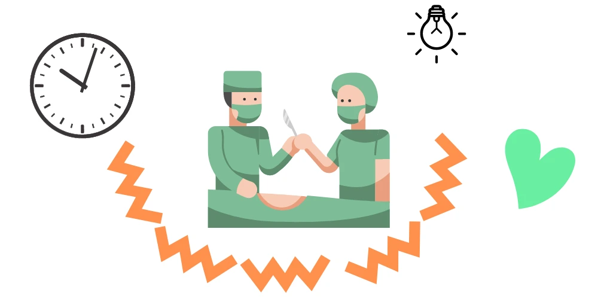
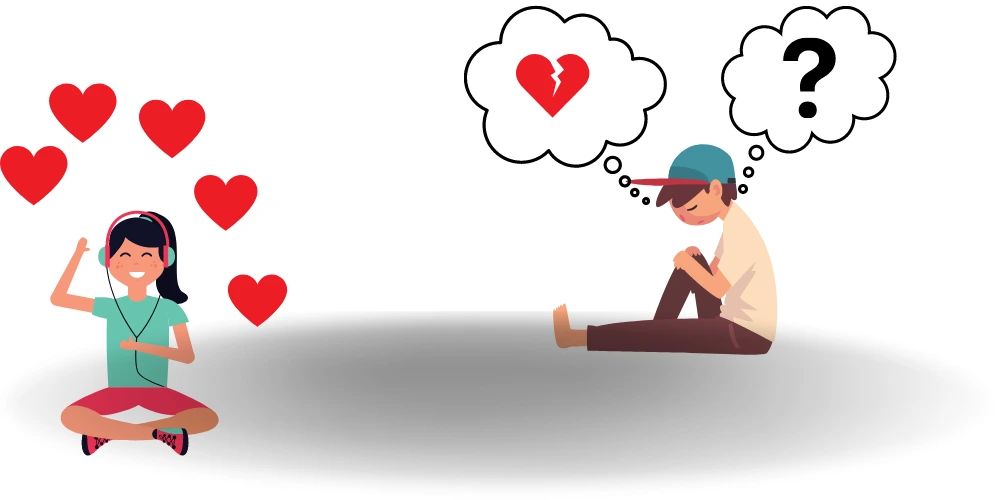

People undergo surgery for all sorts of reasons. We sometimes need surgery to improve our health. To prevent disease, manage pain and improve our functioning. For example, a face injury can make a person feel very self-aware. It can also be causing a lot of anguish to the person. As mental health practitioners, we understand the impact surgery has on mental health. In addition, we are particularly mindful of patients who are about to have or had the following procedures.

How Surgery methods can affect one’s mental health.
1. Breast Biopsy:
This procedure is for patients who have an abnormal growth of breast tissue or lump. Depending on the biopsy, a lumpectomy (the removal of the lump, which has been found to be harmful) may be required. Diagnostic breast procedures are associated with increased anxiety. Understandably worried about cancer and change to the breast come up for patients.
2. Cataract Surgery:
Vision loss due to conditions such as cataracts has been connected with depression and anxiety in older adults. Most importantly, cataracts involve the lens in the eye. As you can imagine not being able to see clearly will impact how you go about your day and lead your life. Cataracts can impair our driving, ability to read and perform our daily tasks.
3. Cesarean Section:
The doctor decides that it is safer for a mother to have a child via an incision through the abdomen as opposed to a vaginal birth delivery. There are many reasons why doctors decide to offer a cesarean section or C-section. Sometimes the decision is made just prior to the birth, it is rushed and the mother feels she has little control or says. C-sections can result in pain and change a mother’s experience of the delivery.
4. Coronary Artery Bypass:
Commonly known as “bypass” surgery. This surgery is for those who are suffering from coronary artery disease. This surgery involves a vein(usually from the leg or arm) being removed and it serves as a replacement for the damaged artery in the heart. However, there are connections between heart disease and depression. Often after a bypass, a patient is not allowed to return to their usual activities for a while. These restrictions too can impact mental health.
5. Free Skin Graft:
The method of “Skin Graft” is to remove healthy skin and used to repair areas of lost or damaged skin in another part of the body. This is surgery is for burns, injuries or surgical patients whose skin is beyond repair. The surgeons will explain the process in detail such as what will happen before, during and after the surgery. Skin grafts can cause a change in appearance which in turn can impact mental health after surgery. How we perceive our physical appearance can impact how we feel about ourselves.
6. Low Back Pain Surgery:
There are so many reasons like stress on the back, pain or trouble walking that make surgeons operate on the lower back. Chronic back pain is a leading cause of disability. This surgery is not offered by the surgeons unless another treatment has been tried. Low Back Pain Surgery tries to correct bone alignment. When your physical movement is impacted, it can affect your mental health and cause psychological distress. Moreover, psychological distress can worsen the pain.
7. Amputations:
This type of surgery is becoming less prevalent with advances in medicine. Previously amputations were a common complication of long-standing illnesses like diabetes. An amputation can also follow an accident or injury. Amputations can impact our ability to write, drive and work. It is a loss of body and function. As a result, grief can impact mental health.

The Stigma vs Reality
The word “surgery” may bear with it a stigma for some. It is an additional stressor for those with pre-existing anxiety or depression. So, it can be too overwhelming to take. When a person has an underlying mental health concern, the idea of “surgery” becomes a lot more complex. It is more complex than just simply fixing the physical body. Surgery can become a burden. It can be a huge strain on the person and their family. Besides, wellness becomes a secondary concern. Now, fear of the unknown takes the first seat. As a result, for those with underlying mental health concerns, surgery can become an insurmountable prospect.
To ease the anxiety or depression of a person who is to or has undergone any type of surgery, input from a psychologist or psychiatrist can be sought. Psychiatric services may help with medication to relieve their stress. Some would just rather talk about their stresses, here a psychologist can be helpful.
Either way, if you or your loved ones feel bothered, worried, stressed and simply unease, at the thought of surgery it would then be wise to contact your family doctor or surgeon. Then, steps can be taken to address it. Furthermore, the journey through surgery will be easier.